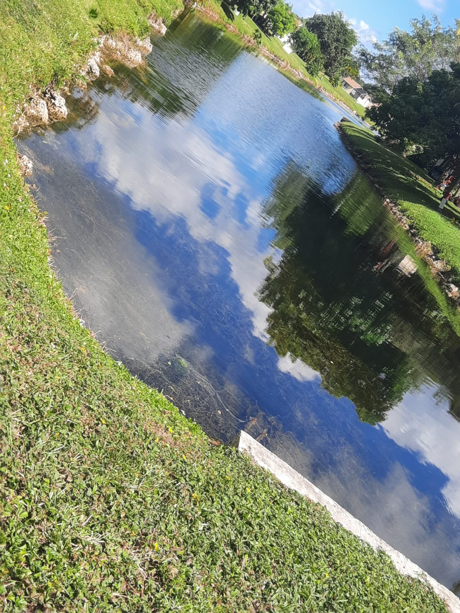
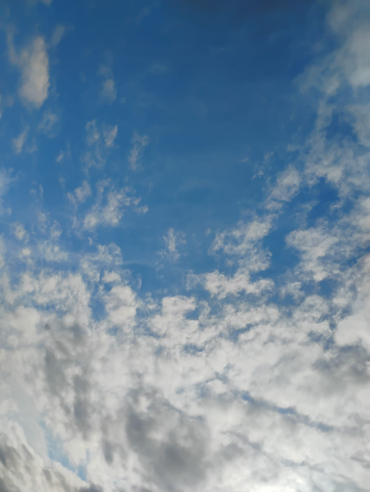
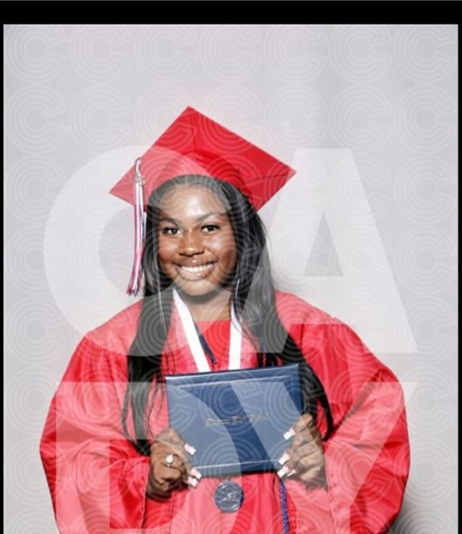
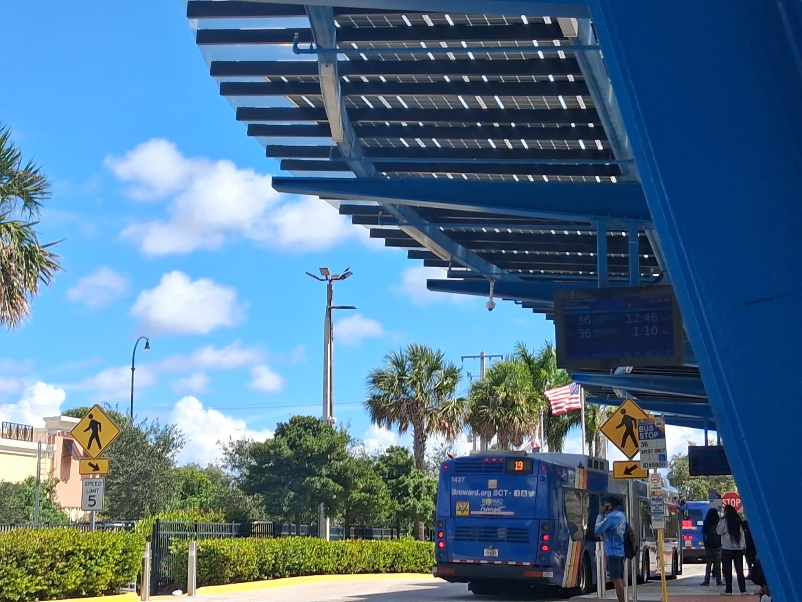
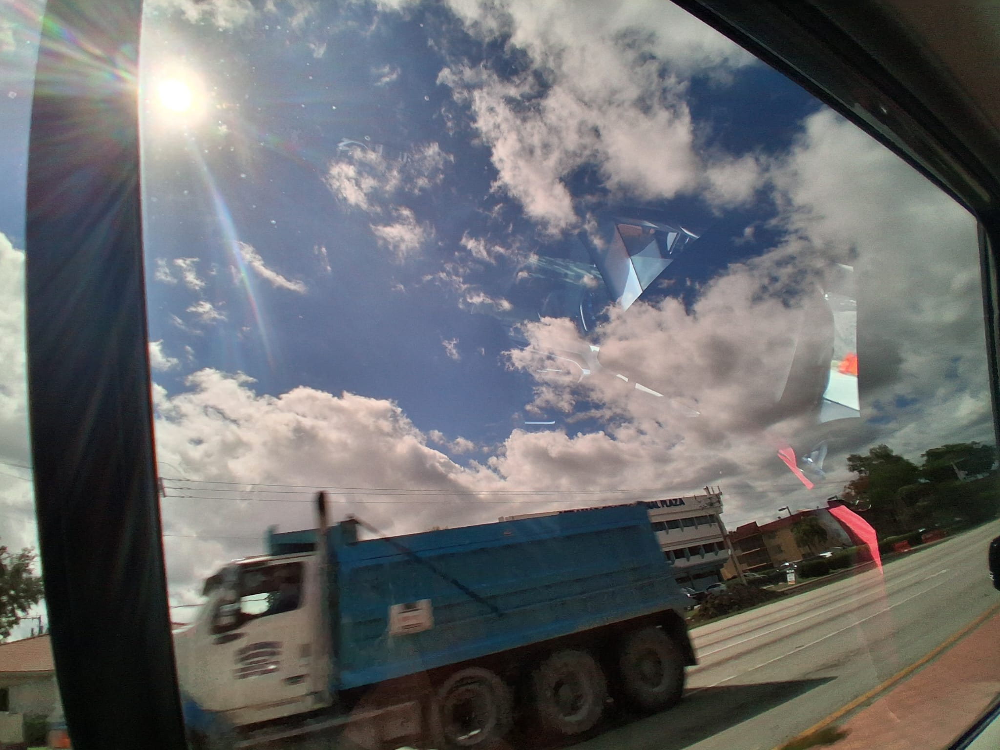
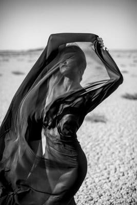

Offrez-vous une expérience photographique unique avec mes services professionnels Que ce soit pour des portraits, des événements spéciaux ou des séances en extérieur, je capture chaque moment avec créativité et passion. Mon approche personnalisée garantit des résultats exceptionnels, mettant en valeur votre histoire à travers des images authentiques et mémorables.


Pour toute demande de renseignements ou pour réserver une séance photo, n'hésitez pas à me contacter. Je suis disponible pour discuter de vos besoins et vous aider à créer des souvenirs inoubliables à travers la photographie.
Email: sora@gmail.com
Téléphone: +33 1 23 45 67 89
Adresse: 312068 G .ATLANTY